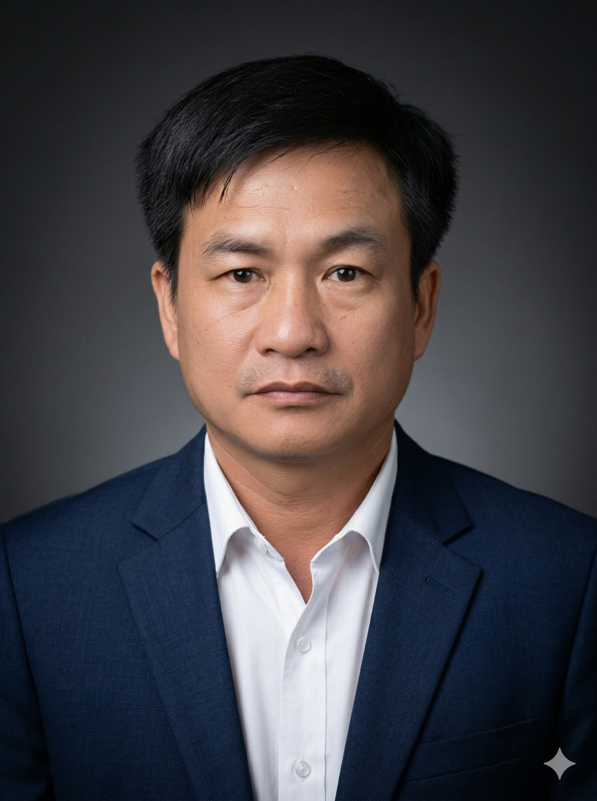
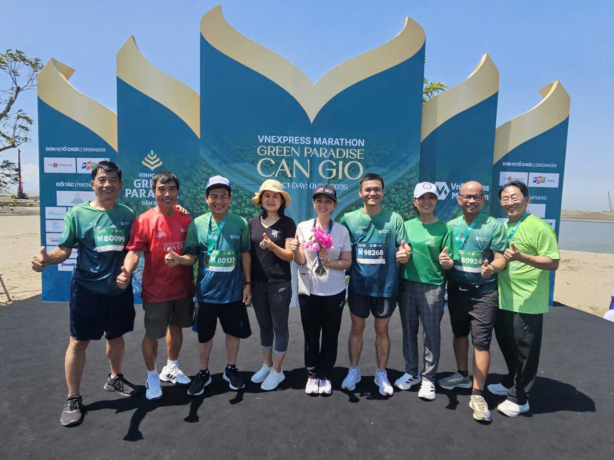

Từ đôi bàn tay thợ lành nghề đến người kỹ sư giàu kinh nghiệm xây dựng cuộc sống phồn hoa phố thị Sài Gòn, và kiến trúc sư kiến tạo cuộc sống xAI, người truyền lửa phổ cập công nghệ AI đến cho cộng đồng từ những bước chân đầu tiên, thành một Marathoner đầy cảm hứng

Kỹ sư • Kiến trúc sư cuộc sống xAIMột mình rời quê lên phố với hai bàn tay trắng, chắt chiu từng giọt mồ hôi nơi xưởng máy để bước vào cổng trường Đại học ở tuổi 24. Hôm nay, giữa những tòa cao ốc rực sáng của phố thị Sài Gòn – TP. Hồ Chí Minh phồn hoa, giàu đẹp và nghĩa tình, tôi nhìn lại hành trình ấy bằng nụ cười hạnh phúc khi băng qua vạch đích cuộc đời.
Đó là chặng đường vươn lên không ngừng nghỉ: từ đôi bàn tay người thợ lành nghề trở thành người kỹ sư giàu kinh nghiệm xây dựng phố thị Sài Gòn, bước tiếp thành kiến trúc sư kiến tạo cuộc sống xAI — người truyền lửa phổ cập công nghệ AI đến cho cộng đồng từ những bước chân đầu tiên, và trở thành một Marathoner đầy cảm hứng.
Ai trong đời cũng có một điểm xuất phát, và điểm xuất phát của tôi bắt đầu từ một chiếc ba lô bạc màu trên chuyến xe khách tiến về thành phố Hồ Chí Minh. Khi ấy, tôi chỉ là một chàng trai trẻ một mình rời quê hương, mang theo hành trang duy nhất là sức vóc của tuổi trẻ, đôi bàn tay chai sần không ngại việc khó và một khát vọng đổi đời âm ỉ cháy trong lồng ngực.
Những năm tháng làm thợ trực tiếp nơi xưởng máy và công trường đã rèn giũa cho tôi đôi bàn tay lành nghề, sự tỉ mỉ, kỷ luật và lòng tự trọng nghề nghiệp. Trong tiếng máy chạy rền vang và những ca làm việc kéo dài 10 đến 12 tiếng mỗi ngày, từng mối hàn, từng đường ống đều được chăm chút bằng tất cả sự tận tâm.
Ở tuổi 24 — cái tuổi mà bạn bè đồng trang lứa đã tốt nghiệp đại học và yên bề công việc — tôi lại đưa ra quyết định khiến nhiều người ngỡ ngàng: Ôn thi Đại học. Nhiều người khuyên tôi rằng đã có tay nghề vững, thu nhập ổn định rồi thì cần gì phải khổ cực quay lại từ đầu. Nhưng tôi hiểu rõ, trở ngại lớn nhất của đời người không phải là tuổi tác, mà là sự bằng lòng với giới hạn của chính mình.
Bước vào giảng đường đại học với nền tảng là một người thợ thực chiến, sự kết hợp giữa đôi bàn tay thợ lành nghề và tư duy của người kỹ sư đã giúp tôi bứt phá mạnh mẽ. Trở thành một Kỹ sư giàu kinh nghiệm trong ngành Cơ Điện Lạnh (HVAC/MEP), tôi trực tiếp góp phần xây dựng cuộc sống phồn hoa nơi phố thị Sài Gòn với lòng biết ơn sâu sắc dành cho mảnh đất đã cưu mang và trao cơ hội cho chàng thanh niên nghèo năm ấy.
Không dừng lại ở những công trình hiện đại, trước làn sóng cách mạng công nghệ mới, tôi tiếp tục dấn thân trở thành kiến trúc sư kiến tạo cuộc sống xAI và là người truyền lửa phổ cập công nghệ AI đến cho cộng đồng từ những bước chân đầu tiên. Tôi tâm niệm rằng công nghệ AI phải gần gũi, thiết thực và phục vụ cuộc sống con người — giúp mọi người tự tin tiếp cận, làm chủ công nghệ ngay từ những bước khởi đầu để nâng tầm công việc và cuộc sống.
Khi sự nghiệp đã vững vàng, tôi nhận ra thành công trọn vẹn nhất không chỉ đo bằng chức danh, mà đo bằng sức khỏe, sự bình an trong tâm hồn, tinh thần truyền lửa cho cộng đồng và những mối quan hệ chân thành. Tôi tìm đến chạy bộ đường dài (Marathon) như một cách rèn luyện thân - tâm - trí và trở thành một Marathoner đầy cảm hứng (BIB M 80137).
Những buổi sáng cuối tuần cùng anh chị em đồng đội sải bước dưới hàng dừa xanh mát ở Cần Giờ hay cùng nhau đeo trên ngực tấm huy chương hoàn thành (Finisher), cùng cười vang dưới nắng sớm — đó chính là định nghĩa chân thực nhất của "Hành Trình Hạnh Phúc".
